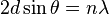

Основные работы по кристаллографии, кристаллофизике, кристаллооптике, рентгеноструктурному анализу, минералогии — автор около 150 работ.
Предложил способ вывода всех видов симметрии кристаллов, разработал графический метод обработки результатов измерения кристаллов с помощью стереографической сетки (сетка Вульфа). Обнаружил (1895) влияние силы тяжести на форму кристалла во время его роста из раствора, изобрел вращающий кристаллизатор и разработал метод получения кристаллов правильной формы. Установил закон процесса роста кристаллов, согласно которому скорости роста граней кристалла пропорциональны их удельным поверхностным энергиям (закон Вульфа). В 1904 году выпустил в свет свое «Руководство по кристаллографии», являющееся во многом синтезом его работ в этой науке.
В 1913 году независимо от Л. Брэгга вывел условия интерференционного отражения рентгеновских лучей от кристаллов (формула Брэгга —Вульфа), положенные в основу рентгеновской спектроскопии. Первый в России начал рентгеноструктурные исследования.
Г. В. Вульф — автор ряда научно-популярных книг: «Жизнь кристаллов» (1918), «Симметрия и ее проявление в природе» (1915), «Как растут кристаллы» (1908) и др.
Условие Вульфа — Брэгга определяет направление максимумов дифракции упруго рассеянного на кристалле рентгеновского излучения. Имеет вид:
